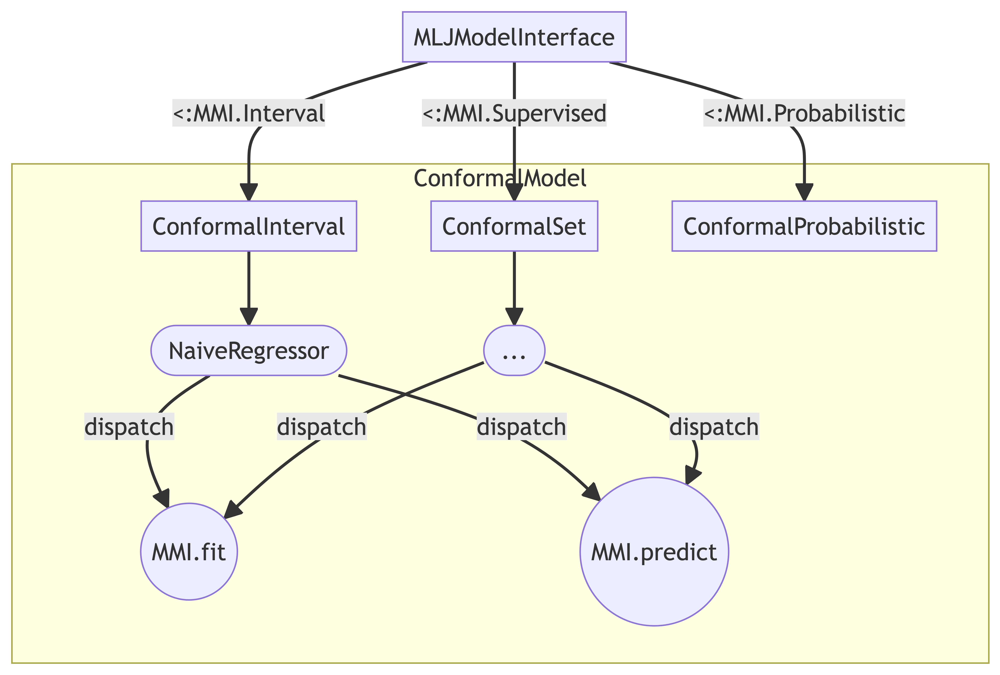

Package Architecture
The diagram below demonstrates the package architecture at the time of writing. This is still subject to change, so any thoughts and comments are very much welcome.
The goal is to make this package as compatible as possible with MLJ to tab into existing functionality. The basic idea is to subtype MLJ Supervised models and then use concrete types to implement different approaches to conformal prediction. For each of these concrete types the compulsory MMI.fit and MMI.predict methods need be implemented (see here).

Abstract Subtypes
Currently I intend to work with three different abstract subtypes:
ConformalPrediction.ConformalIntervalConformalPrediction.ConformalProbabilisticSetConformalPrediction.ConformalProbabilistic
fit and predict
The fit and predict methods are compulsory in order to prepare models for general use with MLJ. They also serve us to implement the logic underlying the various approaches to conformal prediction. To understand how this currently works, have a look at the ConformalPrediction.AdaptiveInductiveClassifier as an example: fit(conf_model::ConformalPrediction.AdaptiveInductiveClassifier, verbosity, X, y) and predict(conf_model::ConformalPrediction.AdaptiveInductiveClassifier, fitresult, Xnew).